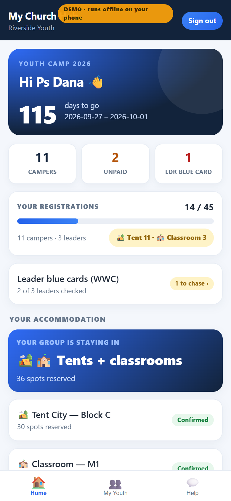
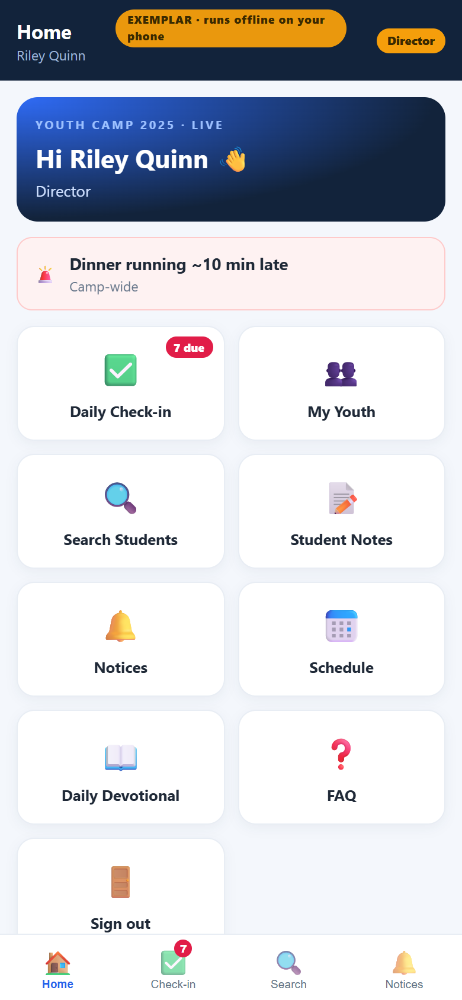
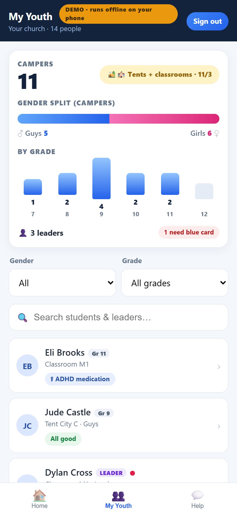
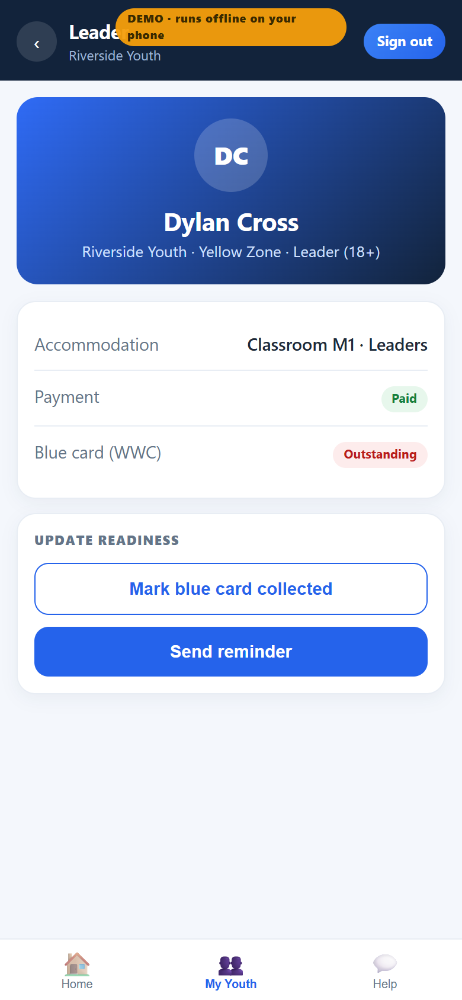
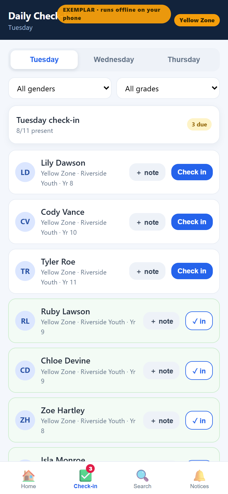
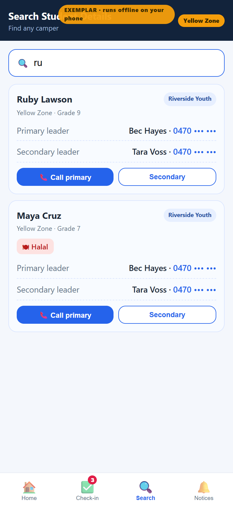
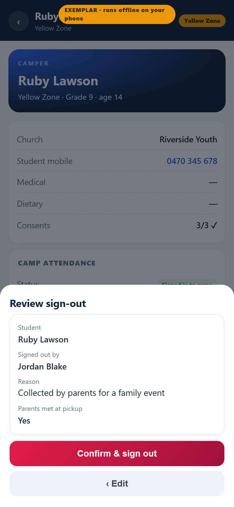
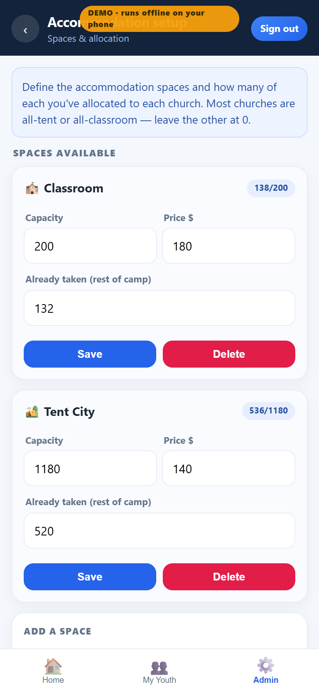

A single, phone-first app your whole camp runs on — it changes with the season, from the sign-up months to the four days on the ground. Same login, same record, no spreadsheets.
Built & working todayPhone-firstRuns offlinePre-camp → At-camp in one tapYear-to-year
01 · The need
Free your people. Don't replace them.
The tools do the repetitive work — your people do the ministry.
What eats time today
Daily check-ins run off a big shared Google Sheet
Accommodation juggled in another shared Sheet
Constant double-handling between sheets, exports & texts
Chasing payments & blue cards line-by-line
Ringing around to find the right leader
What it frees them for
Being present with students
Pastoral care & follow-up that doesn't slip
Faster, calmer decisions on the day
Safeguarding done properly, not in a rush
Actually resting between sessions
Not fewer people — the same people, on the things only people can do.
02 · Single source of truth
Registration sits at the centre.
Every team reads from the one connected record — in the sign-up months and on camp days alike. No parallel spreadsheets, no double-handling.
REGISTRATIONone record per person
Accommodationtents / rooms allocated
Cateringnumbers + dietary
First aidmedical + allergies
Budget & paymentswho's paid, what's owed
Check-in & supervisiondaily presence
Leaders & blue cardsWWC status
03 · One app, two modes
The same app changes with the season.
An admin flips one switch and every login moves from pre-camp prep to live camp operations — same accounts, same data, nothing reinstalled.
Pre-camp

Registrations · payments · blue cards · accommodation
Admin taps the mode badge→Everyone moves on next login
At camp

Check-in · notes · sign-out · search · notices
04 · Pre-camp mode
Every church arrives ready.
~1,000students
~23churches
4zones
1shared record


One status screen: campers, unpaid, leaders still needing a blue card, your countdown.
My Youth snapshot — grade × gender at a glance, with drop-down filters.
Blue card (working-with-children) tracked for 18+ leaders only — chased before camp.
Accommodation shown the way ministries book it — all tents, all classrooms, or both.
05 · At-camp mode
The four days, in your pocket.
4camp days
2×check-ins / day
4roles
0shared sheets


Twice-daily check-in — day picker + gender/grade filters; presence at a glance.
Home shows your most-recent notices first; tap through, dismiss when done.
Student notes filter by zone & gender; zone/director read + CSV export.
Scoped notices (camp / zone / church) you can send now or schedule for later.
Four roles, least-privilege — one account that works in both seasons: church · zone leader · director · admin.
06 · Safeguarding
Built for safeguarding — not just convenience.

Accountable camp sign-out — release a youth with the leader's name, reason, and whether parents were met, reviewed before confirming; they drop off the daily roll. One-tap sign back in.
Privacy by default — contact numbers masked, reveals audited, medical scoped to zone.
Notes are write-for-church, read-for-leadership — accountable records, not gossip.
Admin console runs it year to year — accounts, FAQ, schedule, settings, reset; no code changes.
07 · One-time setup
Set the camp up once — reuse it every year.

Define accommodation spaces (capacity, price) and allocate spots to each church.
Add churches + church / zone-leader / director logins; church name must match the rego form.
Director rollup — camp-wide totals plus per-church progress on rego, payment & blue cards.
"Set defaults", then "Start new year" — purge registrations, keep the scaffold + the one admin.
The ask
One small yes keeps every option open.
The app is built, tested and demo-able offline today — pre-camp and at-camp in one. Adopt it for YC2026, prove the value with real leaders, and wire it to a shared backend when you're ready.